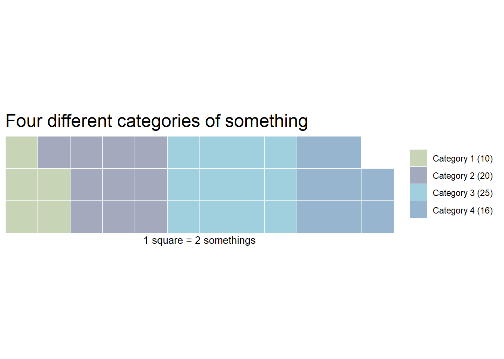

library(ggplot2)
library(waffle)Warning: pakke 'waffle' blev bygget under R version 4.5.1indsæt subtitle
A rather popular chart type. Not really my favorite, but I can see how it makes things easier to understand for people who are not used to read and understand charts. The reason for my less than favourable view on waffle charts are probably linked to its overuse in meaningless infographics.
A waffle chart is a grid with squares/cells/icons/whatever, where each cell represents a number of something.
Lets make an example:
library(ggplot2)
library(waffle)Warning: pakke 'waffle' blev bygget under R version 4.5.1vec <- c(`Category 1 (10)`= 10 , `Category 2 (20)`= 20,
`Category 3 (25)`= 24, `Category 4 (16)` = 16)
waffle(vec/2, rows=3, size=0.1,
colors=c("#c7d4b6", "#a3aabd", "#a0d0de", "#97b5cf"),
title="Four different categories of something",
xlab="1 square = 2 somethings")
One annoyance: waffle wants you to spell colours wrong.
waffle takes a named vector of values, rows sets the number of rows of blocks. Default is 10.
One standard way, is to show a 10x10 grid, where each cell represents 1% of the total:
waffle(vec/sum(vec)*100)
A bit annoying - waffle rounds the values of the vector, leading to only 98 squares. So you have to manipulate your vector to get to 100. Well, actually it is probably a minor annoyance.
What if you want something else than coloured squares?
The arguments “use_glyph” and “glyph_size” makes that possible. First, we’ll need the library extrafont
library(extrafont)
extrafont::font_import()
loadfonts()We’ll also need to have the “awesomefonts” installed. It can be downloaded from:
http://maxcdn.bootstrapcdn.com/font-awesome/4.3.0/fonts/fontawesome-webfont.ttf
This should be easier if you are on a desktop machine. As I’m running this through my own installation of RStudio on a remote server, it was a bit more difficult.
I needed to place the “fontawesome.ttf” file in the “/usr/share/fonts/truetype/fontawesome” directory.
Then, running R as superuser on the commandline, I imported the extrafont library, and then ran “font_import()”.
But then it worked!
There is now a long list of 593 different icons, that can be used. If you want a list, just run fa_list().
And now, we can make a waffle chart with the glyph of our choice.
font_add("fa", "/usr/share/fonts/truetype/font-awesome/fontawesome-webfont.ttf")
waffle(vec/2, rows=4, use_glyph = "wifi")install.packages("showtext")
library(showtext)
font_add("fa", "/usr/share/fonts/truetype/fontawesome/fontawesome-webfont.ttf")
showtext_auto(FALSE)We can change the colours:
library(RColorBrewer) waffle(vec/2, rows=4, use_glyph = “wifi”, colors=brewer.pal(4,“Set1”))
Adjust the size
waffle(vec/2, rows=4, use_glyph = “wifi”, colors=brewer.pal(6,“Set1”), glyph_size=5)
But that does not look very good.
waffle is based on ggplot, so we have access to the full range of functionality. But not all of them are going to look good in this context:
waffle(vec/2, rows=4, use_glyph = “wifi”, colors=brewer.pal(4,“Set1”)) + geom_label(label=“42”, size = 3)
If we install a font that supports it, we even get access to the large number of UTF-8 glyphs. Here is a favorite of mine:
waffle(vec/2, rows=4, colors=brewer.pal(4,“Set1”)) + geom_label(label=sprintf(“F427”), size = 8)
Which of course requires you to have a font on your computer that supports penguins.
Here is one: http://users.teilar.gr/~g1951d/Symbola.zip